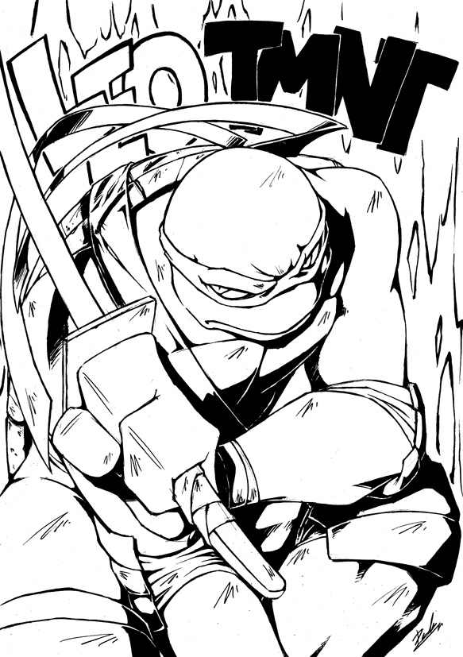
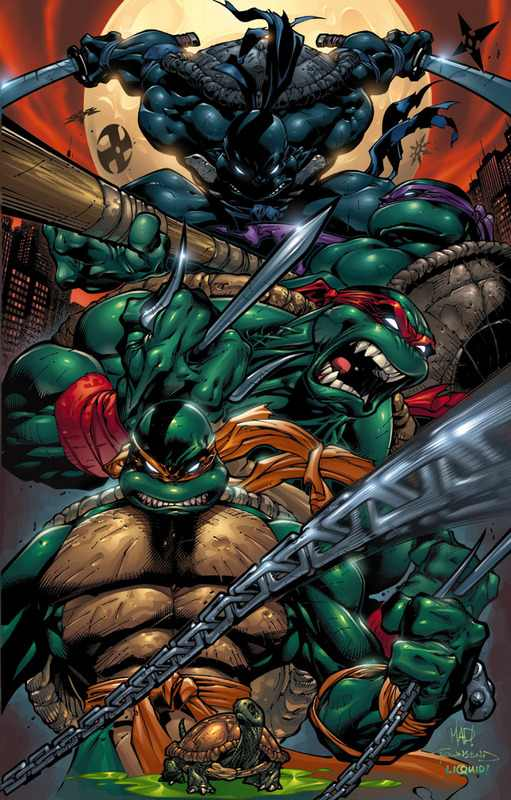
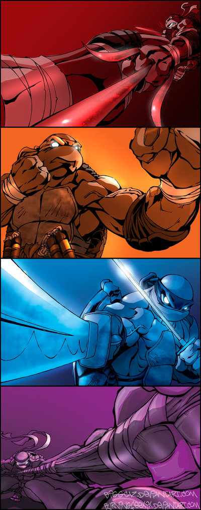
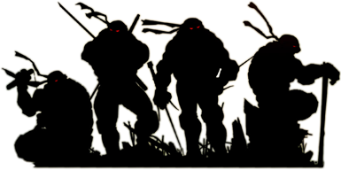
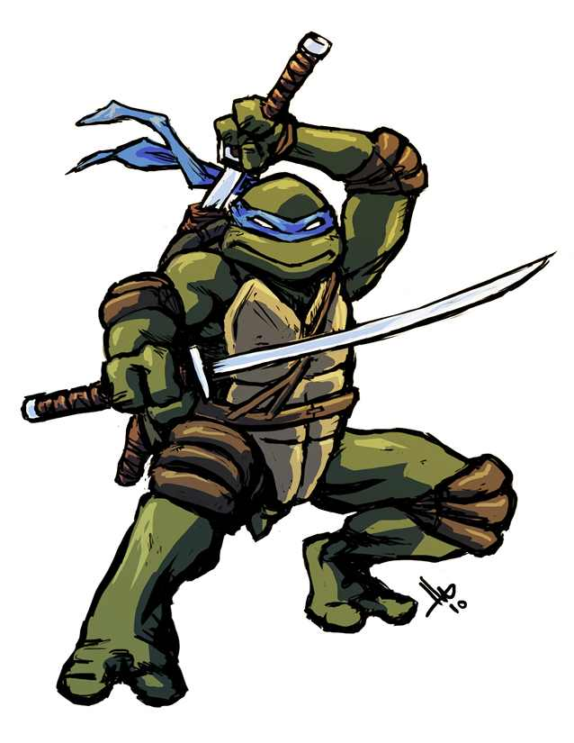
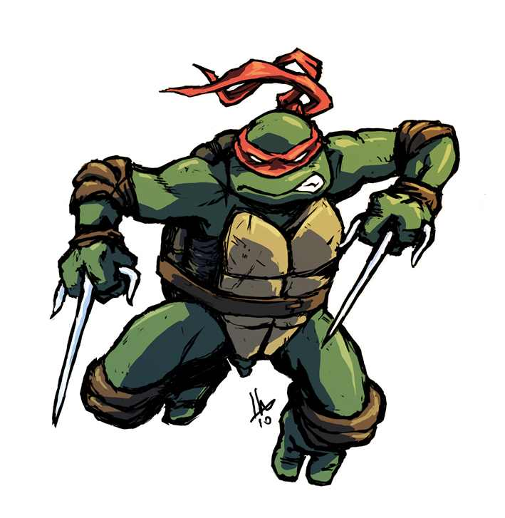
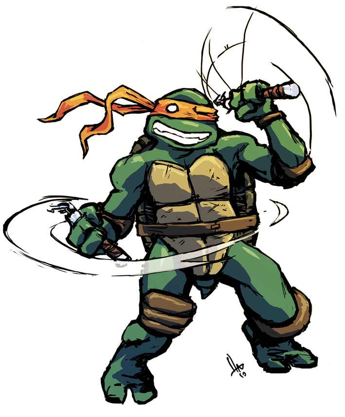
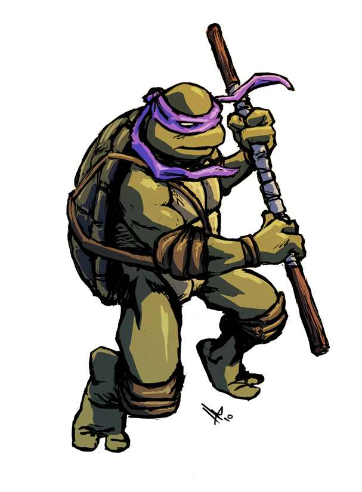
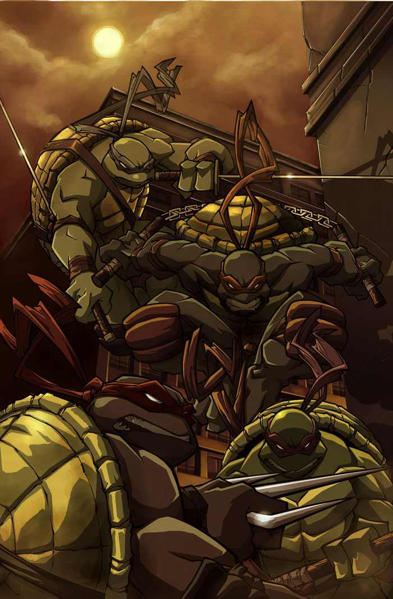

TMNT
The Ninja Turtles
Why you should fear them

Cowabunga!
What are they?
Let's define what these monsters look like.
- Teenage
- Mutant (!)
- Ninja (!!)
- Turtles (!!!)
1.80mtall turtles with weapons!!!


Show on stage how big they are!
And there are 4 of them!!!


Leonardo

The leader. Leonardo wears a blue mask and wields two katana. He is the oldest of the four and the most skilled fighter of the turtles. He's faster than you!
Raphael

The bad boy. Raphael wears a red mask and wields a pair of sai. He is angry by nature. He is an intense fighter. He's too aggressive for you!
Michelangelo

Easy-going and free-spirited. Michelangelo wears an orange mask and wields a pair of nunchaku. While he loves to relax, this Turtle also has an adventurous and creative side. He's stronger than you!
Donatello

The genius. Donatello wears a purple mask and wields the bō staff. Donatello is perhaps the least violent Turtle, preferring to use his knowledge to solve conflicts. He's smarter than you!
END

Credits
Text
Movie
Pictures